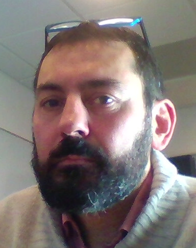

François Lauze
Associate Professor
| University of Copenhagen |
| Universitetsparken 5 |
| 2100 København Ø |
| Email: |
francois@diku.dk |
| Office: |
HCØ - Building E, Office 4.0.9 |
Phone: |
(+45) +45 21553933 |
Short CV
I studied Mathematics in France, University of Nice Sophia Antipolis where I got a PhD in Algebraic Geometry in 1994. I spent some years in Burkina Faso, West Africa,
where I taught Mathematics at the University of Ouagadougou. I moved then to Denmark and engaged in yet another PhD, at the
IT University of Copenhagen, degree awarded in 2004. I worked on Variational Methods for Motion Compensated Inpainting and motion recovery among other. I have since mainly worked with variational methods, and geometry for Image Analysis (mainly Riemannian, but also some metric geometry). More recently, I have spend some time with inverse problems in photometric stereo and tomographic imaging.
Research Interests
My main research area around the mathematical foundations of Image Analysis.
Currently I am particularly interested in imaging inverse problems, including
- Variational Methods for Video Sequences Processing
- Geometry for Shape spaces
- Photometric Stereo
- Tomography
- Segmentation
- Variational Methods in the Riemannian Geometry Setting
and applications of these methods.
Teaching Activities
Currently I teach the following courses:
- Numerical Optimisation (NO) with Oswin Krause. I ham currently course responsible but it will soob be Oswin's tour!
- Vision and Image Processing (VIP) - course responsibleSøren Ingvor Olsen.
- Introduction to Data Scienvce with Thomas Hamelryck. I am course responsible.
Past courses include
- Signal and Image Processing (SIP),
- Modelling and Analysis of Data (MAD),
- Introduction to Programming (Grundlæggende Programmering) (KOMIT IP),
- Mathematics for Science (MatNat).
- Computational Methods for Simulation (CMIS).
Selected Publications
Please click here for a full list.
Aasa Feragen, François Lauze, Søren Hauberg
Geodesic Exponential Kernels: When Curvature and Linearity Conflict
Proceedings of IEEE CVPR 2015, 3032-3042
Stefan Horst. Sommer, François. Lauze and Mads Nielsen.
Optimization over Geodesics for Exact Principal Geodesic Analysis.
Advances in Computational Mathematics, 40(2):283-313 , 2014.
[
WWW]
Søren Hauberg,
François Lauze,
and Kim Steenstrup Pedersen.
Unscented Kalman Filters on Riemannian Manifolds.
Journal of Mathematical Imaging and Vision, 46(1):103-120,
2013.
Sune H. Keller, François Lauze and Mads Nielsen.
Video super-resolution using simultaneous motion and intensity calculations
IEEE Transactions on Image Processing 20(7), pp. 1870-1884, 2011
Stefan Sommer, François Lauze and Mads Nielsen.
The Differential of the Exponential Map, Jacobi Fields and Exact Principal Geodesic Analysis.
Submitted.
Paper availabe at
arXiv.org 2012
Current PhD students
Leise Borg.
Jacob Daniel Kirstejn Hansen,
Past PhD students
Yvain Quéau
(ENSEEIHT, Toulouse, France), main
supervisor Jean-Denis
Durou.
Katrine Hommelhof Jensen with Sami Brandt.
Lars Lau Rakêt with Mads Nielsen, Søren Forchhammer and Bo Markussen. Graduated 2014.
Chen Chen, main supervisor Mads Nielsen. Graduated Oct. 2013.
Adhish Prasoon, main supervisor Mads Nielsen. Graduated May 2014.
Pauline Julian (French industrial PhD CIFFRE) at FittingBox, with Vincent Charvillat
and Adrien Bartoli. . Graduated Oct. 2012.
Sune H. Keller, main supervisor Mads Nielsen. Graduated Dec. 2007
Aditya J. Tatu, main supervisor Mads Nielsen. Graduated Apr. 2010.
Stefan Sommer with Mads Nielsen. Graduated March 2012.
Past PhD courses at DIKU
Image Canons
Last modified: September 2018.